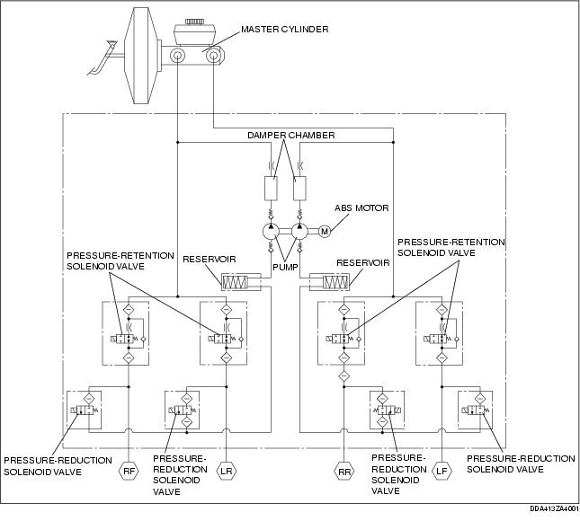
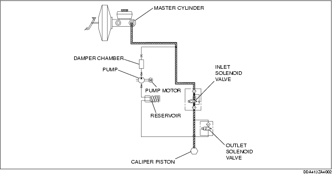

ABS HU part construction/operation
Construction
• The ABS HU mainly consists of the inlet/outlet solenoid valves, pump motor (pump) and reservoir.
Function Of Main Component Parts
Hydraulic Circuit Diagram

Operation
During normal braking
- • During normal braking, the solenoid valves are not energized and all of them are off. When the brake pedal is depressed, brake fluid pressure is transmitted from the master cylinder, through the inlet solenoid valves, and then to the caliper piston. (The figure shows control for one front wheel only.)
Solenoid valve operation table
Hydraulic Circuit Diagram

During ABS and EBD control
- • When wheel lock-up is about to occur, the inlet and outlet solenoid valves are energized and controlled in three pressure modes (increase, maintain, or reduction), thereby adjusting brake fluid pressure. Brake fluid during pressure reduction is temporarily stored in the reservoir and afterwards the pump motor operates the pump to return the fluid to the master cylinder. (The figure shows control for one front wheel only.)
Solenoid valve operation table
Hydraulic Circuit Diagram